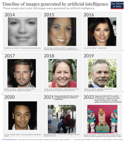
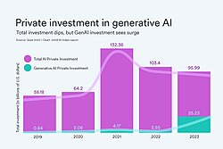
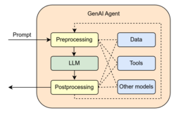
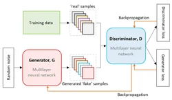
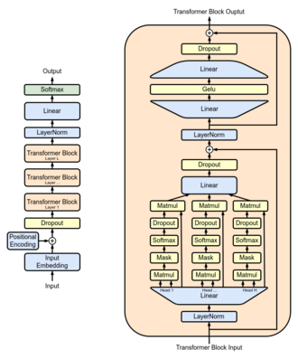

Generative AI

| Part of a series on |
| Artificial intelligence (AI) |
|---|
| Glossary |
Generative artificial intelligence (GenAI) is a subfield of artificial intelligence (AI) that uses generative models to generate text, images, videos, audio, software code or other forms of data.[1] These models learn the underlying patterns and structures of their training data, and use them to generate new data[2] in response to input, which often takes the form of natural language prompts.[3][4]
The prevalence of generative AI tools has increased significantly since the AI boom in the 2020s. This boom was made possible by improvements in deep neural networks, particularly large language models (LLMs), which are based on the transformer architecture. Generative AI applications include chatbots such as ChatGPT, Claude, Microsoft Copilot, DeepSeek, Doubao, Google Gemini, Grok, Kimi and Qwen; text-to-image models such as DALL-E, Firefly, Stable Diffusion, and Midjourney; and text-to-video models such as Veo, LTX and Sora.[5][6][7]
Companies in a variety of sectors have used generative AI, including those in software development, healthcare,[8] finance,[9] entertainment,[10] customer service,[11] sales and marketing,[12] art, writing,[13] and product design.[14]
Generative AI has been used for cybercrime, and to deceive and manipulate people through fake news and deepfakes.[15][16] Generative AI models have been trained on copyrighted works without the rightholders' permission.[17] Many generative AI systems are reliant on large-scale data centers, whose environmental impacts include electronic waste, consumption of fresh water for cooling, and high energy consumption that is estimated to be growing steadily.[18]
History
[edit]Early history
[edit]The origins of algorithmically generated media can be traced to the development of the Markov chain, which has been used to model natural language since the early 20th century. Russian mathematician Andrey Markov introduced the concept in 1906,[19][20] including an analysis of vowel and consonant patterns in Eugene Onegin. Once trained on a text corpus, a Markov chain can generate probabilistic text.[21][22]
By the early 1970s, artists began using computers to extend generative techniques beyond Markov models. Harold Cohen developed and exhibited works produced by AARON, a pioneering computer program designed to autonomously create paintings.[23] The terms generative AI planning or generative planning were used in the 1980s and 1990s to refer to AI planning systems, especially computer-aided process planning, used to generate sequences of actions to reach a specified goal.[24][25] Generative AI planning systems used symbolic AI methods such as state space search and constraint satisfaction and were a "relatively mature" technology by the early 1990s. They were used to generate crisis action plans for military use,[26] process plans for manufacturing[24] and decision plans such as in prototype autonomous spacecraft.[27]
Generative neural networks (since the late 2000s)
[edit]
Machine learning uses both discriminative models and generative models to predict or generate data. Beginning in the late 2000s and early 2010s, advances in deep learning led to major improvements in image classification, speech recognition, and natural language processing.[28] Neural networks in this period were typically trained as discriminative models due to the relative difficulty of training generative models.[29]
In 2014, the introduction of models such as the variational autoencoder (VAE) and generative adversarial network (GAN) enabled effective deep generative modeling of complex data such as images.[30][31] In 2017, the paper "Attention Is All You Need" proposed that transformer architecture could enable further advances in generative modeling compared to earlier long short-term memory (LSTM) networks.[32] This led to the development of generative pre-trained transformer (GPT) models, beginning with GPT-1 in 2018.
Generative AI adoption
[edit]

In March 2020, the release of 15.ai, a free web application created by an anonymous MIT researcher that could generate convincing character voices using minimal training data, was one of the earliest publicly available uses for generative AI.[33] The platform is credited as the first mainstream service for audio deepfakes.[34][35]
In 2021, DALL-E, a closed-source transformer-based generative model developed by OpenAI, drew widespread attention to text-to-image generation.[36]
Other projects, including open-source approaches such as VQGAN+CLIP and DALL·E Mini (later renamed Craiyon), made similar systems more accessible to the public.[37]
Dream by Wombo was released at the end of 2021,[38] followed by the releases of Midjourney and Stable Diffusion in 2022.[39][40]
In November 2022, ChatGPT was released to the public. By 2023, it popularized generative AI for general-purpose text-based tasks.[41][42][43]


In a 2024 survey by marketing research firm Ipsos, Asia–Pacific countries were significantly more optimistic than Western societies about generative AI and show higher adoption rates. Despite expressing concerns about privacy and the pace of change, 68% of Asia-Pacific respondents believed that AI was having a positive impact on the world, compared to 57% globally.[44] According to a survey by SAS and Coleman Parkes Research, as of 2023, 83% of Chinese respondents were using the technology, exceeding both the global average of 54% and the U.S. rate of 65%. A UN report indicated that Chinese entities filed over 38,000 generative AI patents from 2014 to 2023, more than any other country.[45] A 2024 survey by the Just So Soul social media app reported that 18% of respondents born after 2000 used generative AI "almost every day", and that over 60% of respondents like or love AI-generated content (AIGC), while less than 3% dislike or hate it.[46]
By mid-2025, companies were increasingly abandoning generative AI pilot projects as they had difficulties with integration, data quality and unmet returns, leading analysts at Gartner and The Economist to characterize the period as entering the Gartner hype cycle's "trough of disillusionment" phase.[47][48]
Applications
[edit]Generative artificial intelligence has been applied across multiple industries for content creation and automation. In healthcare, generative models are used for drug discovery and the generation of synthetic medical data to train diagnostic systems.[49] In finance, they are used for report drafting, data generation, and customer service automation.[50] Media and entertainment industries use generative systems for tasks such as music composition, script development, and image or video generation.[51] Researchers and policymakers have raised concerns regarding accuracy, misuse, and impacts on academic and professional work.[50]
Text and software code
[edit]Large language models (LLMs) are trained on tokenized text from large corpora and are capable of natural language processing, machine translation, and natural language generation.[52]
LLMs can be used as foundation models for a variety of downstream tasks.[50] They can also be trained on source code to generate programs from prompts.[53]
Many applications combine large language models with external knowledge sources using retrieval-augmented generation (RAG), a technique in which relevant documents are retrieved at inference time and incorporated into the model's response.
Generative AI has been integrated into content management and website publishing platforms, where large language models are used to generate text, assist with page composition, and automate website creation from natural language prompts.[54] WordPress.com is one example of this application, incorporating generative AI into its website authoring workflow.[55]
Audio
[edit]In 2016, DeepMind's WaveNet demonstrated that deep neural networks can generate raw audio waveforms.[56] This enabled more realistic speech synthesis compared to earlier approaches. Subsequent systems such as Tacotron 2 demonstrated end-to-end neural text-to-speech generation.[57]
Images
[edit]Generative AI can be used to create visual art.[51] Such systems are trained on image–text pairs. Examples include Stable Diffusion, DALL-E, and Midjourney.[58]
Video
[edit]Generative AI can be used to produce photorealistic videos. Systems such as Runway have demonstrated text-to-video generation capabilities.[59]
Robotics
[edit]Generative models can be used for motion planning and robot control by learning from prior data.[60]
3D modeling
[edit]Generative models can assist in automating 3D modeling tasks, including generating 3D assets from text or images.[scientific citation needed]
AI-assisted mathematical discovery
[edit]Generative AI systems have been used in mathematics and computer science to generate candidate computer programs, proofs, constructions, or algorithms.
In 2023, Google DeepMind introduced FunSearch, a method for creating computer programs that solve mathematical and algorithmic problems. FunSearch was used to discover new mathematical constructions in the cap set problem and the bin packing problem.[61][62][63]
In 2023, Google DeepMind introduced AlphaDev, which was used to discover small sorting algorithms that outperformed previously known human benchmarks and have been integrated into the LLVM standard C++ sorting library.[64][65] In 2025, Google DeepMind introduced AlphaEvolve, an AI system for general-purpose algorithm discovery and optimization. AlphaEvolve uses LLMs to propose code changes, automated evaluators to assess each candidate, and an evolutionary process to iteratively improve algorithms.[66]
In 2026, in response to the increasing use of generative AI in mathematical discovery, a group of mathematicians issued the Leiden Declaration on Artificial Intelligence and Mathematics, which recommends disclosing the use of AI in research papers, ensuring that AI-assisted papers are peer-reviewed, and providing legal resources and public funding so that academia and for-profit companies can compete on equal terms.[67]
Materials science
[edit]In 2023, Google DeepMind introduced GNoME, a method to propose candidate inorganic crystal structures for computational screening and experimental synthesis in material science.[68] Other material science methods include MatterGen,[69] CDVAE,[70] and CrystalFlow.[71][72]
Generative engine optimization
[edit]Generative engine optimization (GEO) is the practice of structuring digital content and managing online presence to improve visibility in responses generated by generative AI systems. The practice influences the way large language models (LLMs) retrieve, summarize, and present information in response to user queries.[73] Related terms include answer engine optimization (AEO)[73] and artificial intelligence optimization (AIO).[74]
Software and hardware
[edit]

Generative AI models are used by chatbots such as ChatGPT, programming tools such as GitHub Copilot,[75] text-to-image programs such as Midjourney, and text-to-video programs such as Runway Gen-2.[76] Generative AI features have been added to existing commercially available services such as Microsoft Office (Microsoft Copilot),[77] Google Photos,[78] and the Adobe Suite (Adobe Firefly).[79] Many generative AI models are also available as open-source software, including Stable Diffusion and the LLaMA[80] language model.
Smaller generative AI models with up to a few billion parameters can run on smartphones, embedded devices, and personal computers. For example, LLaMA-7B (a version with 7 billion parameters) can run on a Raspberry Pi 4[81] and one version of Stable Diffusion can run on an iPhone 11.[82]
Larger models with tens of billions of parameters can run on laptop or desktop computers. To achieve an acceptable speed, models of this size may require accelerators such as the GPU chips produced by NVIDIA and AMD or the Neural Engine included in Apple silicon products. For example, the 65 billion parameter version of LLaMA can be configured to run on a desktop PC.[83]
The advantages of running generative AI locally include protection of privacy and intellectual property, and avoidance of rate limiting and censorship. The subreddit r/LocalLLaMA in particular focuses on using consumer-grade gaming graphics cards[84] through such techniques as compression.
Language models with hundreds of billions of parameters, such as GPT-4 or PaLM, typically run on datacenter computers equipped with arrays of GPUs (such as NVIDIA's H100) or AI accelerator chips (such as Google's TPU). These very large models are typically accessed as cloud services over the Internet.
In 2022, the United States New Export Controls on Advanced Computing and Semiconductors to China imposed restrictions on exports to China of GPU and AI accelerator chips used for generative AI.[85] Chips such as the NVIDIA A800[86] and the Biren Technology BR104[87] were developed to meet the requirements of the sanctions.
There is free software on the market which attempts to recognizing text generated by generative artificial intelligence (such as GPTZero), as well as images, audio or video coming from it.[88] Potential mitigation strategies for detecting generative AI content include digital watermarking, content authentication, information retrieval, and machine learning classifier models.[89] Despite claims of accuracy, both free and paid AI text detectors have frequently produced false positives, mistakenly accusing students of submitting AI-generated work.[90][91]
Generative models and training techniques
[edit]Generative adversarial networks
[edit]

Generative adversarial networks (GANs) are a generative modeling technique which consist of two neural networks—the generator and the discriminator—trained simultaneously in a competitive setting. The generator creates synthetic data by transforming random noise into samples that resemble the training dataset. The discriminator is trained to distinguish the authentic data from synthetic data produced by the generator. The two models engage in a minimax game: the generator aims to create increasingly realistic data to "fool" the discriminator, while the discriminator improves its ability to distinguish real from fake data. This continuous training setup enables the generator to produce high-quality and realistic outputs.[92]
Variational autoencoders
[edit].png){kind=link}
Variational autoencoders (VAEs) are deep learning models that probabilistically encode data. They are typically used for tasks such as noise reduction from images, data compression, identifying unusual patterns, and facial recognition. Unlike standard autoencoders, which compress input data into a fixed latent representation, VAEs model the latent space as a probability distribution, allowing for smooth sampling and interpolation between data points. The encoder ("recognition model") maps input data to a latent space, producing means and variances that define a probability distribution. The decoder ("generative model") samples from this latent distribution and attempts to reconstruct the original input.[93]


Transformers
[edit]The self-attention mechanism enables the model to determine the relative importance of each token in a sequence when predicting the next token, thereby improving contextual understanding. Unlike recurrent neural networks, transformers process tokens in parallel, which improves training efficiency and scalability.[32][non-primary source needed] Transformers became the foundation for the generative pre-trained transformer (GPT) series developed by OpenAI, replacing traditional recurrent and convolutional models.[citation needed]
Law and regulation
[edit]In the United States, a group of companies including OpenAI, Alphabet, and Meta signed a voluntary agreement with the Biden administration in July 2023 to watermark AI-generated content.[94] In October 2023, Executive Order 14110 applied the Defense Production Act to require all US companies to report information to the federal government when training certain high-impact AI models.[95][96]
In the European Union (EU), the Artificial Intelligence Act includes requirements to disclose copyrighted material used to train generative AI systems, and to label any AI-generated output as such.[97][98]
In China, the Interim Measures for the Management of Generative AI Services introduced by the Cyberspace Administration of China regulates any public-facing generative AI. It includes requirements to watermark generated images or videos, regulations on training data and label quality, restrictions on personal data collection, and a guideline that generative AI services must "adhere to socialist core values".[99][100]
In 2021, UNESCO adopted the Recommendation on the Ethics of Artificial Intelligence, the first global standard-setting instrument on AI. It provides guidance to member states on issues including human rights, fairness, transparency, data governance, and environmental sustainability.[101]
The Group of Seven (G7) launched the Hiroshima AI Process in 2023, which produced international guiding principles and a voluntary code of conduct for developers of advanced AI systems.[102] In 2024, the Council of Europe adopted the Framework Convention on Artificial Intelligence and Human Rights, Democracy and the Rule of Law, the first legally binding international treaty governing artificial intelligence.[103]
Copyright
[edit]Training with copyrighted content
[edit]Generative AI systems such as ChatGPT and Midjourney are trained on large, publicly available datasets that include copyrighted works. AI developers have argued that such training is protected under fair use, while copyright holders have argued that it infringes their rights.[104]
Proponents of fair use training have argued that it is a transformative use and does not involve making copies of copyrighted works available to the public.[104] Critics have argued that image generators such as Midjourney can create nearly-identical copies of some copyrighted images,[105] and that generative AI programs compete with the content they are trained on.[106]
As of 2024, several lawsuits related to the use of copyrighted material in training are ongoing. Getty Images has sued Stability AI over the use of its images to train Stable Diffusion.[107] Both the Authors Guild and The New York Times have sued Microsoft and OpenAI over the use of their works to train ChatGPT.[108][109]
Copyright of AI-generated content
[edit]A separate question is whether AI-generated works can qualify for copyright protection. The United States Copyright Office has ruled that works created by artificial intelligence without any human input cannot be copyrighted, because they lack human authorship.[110] Some legal professionals have suggested that Naruto v. Slater (2018), in which the U.S. 9th Circuit Court of Appeals held that non-humans cannot be copyright holders of artistic works, could be a potential precedent in copyright litigation over works created by generative AI.[111] However, the office has also begun taking public input to determine if these rules need to be refined for generative AI.[112]
In January 2025, the United States Copyright Office (USCO) released extensive guidance regarding the use of AI tools in the creative process, and established that "...generative AI systems also offer tools that similarly allow users to exert control. [These] can enable the user to control the selection and placement of individual creative elements. Whether such modifications rise to the minimum standard of originality required under Feist will depend on a case-by-case determination. In those cases where they do, the output should be copyrightable"[113] Subsequently, the USCO registered the first visual artwork to be composed of entirely AI-generated materials, titled "A Single Piece of American Cheese".[114]
Concerns
[edit]The development of generative AI has raised concerns from governments, businesses, and individuals, resulting in protests, legal actions, calls to pause AI experiments, and actions by multiple governments. In a July 2023 briefing of the United Nations Security Council, Secretary-General António Guterres stated "Generative AI has enormous potential for good and evil at scale", that AI may "turbocharge global development" and contribute between $10 and $15 trillion to the global economy by 2030, but that its malicious use "could cause horrific levels of death and destruction, widespread trauma, and deep psychological damage on an unimaginable scale".[115] In addition, generative AI has a significant carbon footprint.[116]
Societal impacts
[edit]Effects on mental health
[edit]Based on a nationally representative sample of 20,847 US adults, a 2026 survey study in JAMA Network Open found that daily generative AI use was significantly associated with greater depressive symptoms, with the odds of at least moderate depression roughly 30% higher among daily users than among non-users. The association was strongest for personal use and among those aged 25 to 64; the cross-sectional design did not allow for causal conclusions.[117] Separately, a 2025 nationally representative survey of US adolescents and young adults (aged 12 to 21) found that roughly 13% had used generative AI for emotional support, with more than 90% of them reporting the advice as helpful.[118]
Controlled trials have shown some therapeutic potential. The first randomized controlled trial of a fully generative AI therapy chatbot, published in NEJM AI in 2025, found significant reductions in symptoms of depression, anxiety, and eating disorders over four weeks compared to a waitlist control, with participants rating the therapeutic alliance as comparable to that of human therapists.[119] These findings are consistent with a 2025 meta-analysis of 31 RCTs (n=29,637) that found small-to-moderate effects of AI chatbots in reducing depressive, anxiety, and stress symptoms among young adults.[120] Commercially available therapy chatbots nevertheless show significant shortcomings: a 2025 Stanford University study found that they exhibited stigmatizing attitudes toward conditions such as schizophrenia and alcohol dependence, and responded inappropriately to suicidal ideation and delusional thinking.[121]
Researchers have also raised concerns about AI companion chatbots and emotional dependency. While some users of companion apps report reduced loneliness, scientists worry about long-term dependency when chatbots provide constant validation without challenging users' assumptions.[122] In 2026, Stanford researchers found that users of the Character.AI platform with limited offline social networks reported feeling more lonely after seeking emotional support from chatbots.[123]
Overreliance on generative AI may also affect cognitive skills. In a study presented at the 2026 Conference on Human Factors in Computing Systems, participants who used AI regularly over four weeks showed a decreased ability to discern misinformation on their own.[124][125]
Academic honesty
[edit]Generative AI can be used to generate and modify academic prose, paraphrase sources, and translate languages. The use of generative AI in a classroom setting has challenged traditional definitions of academic plagiarism, leading to a "cat-and-mouse" dynamic between students using AI and institutions attempting to detect it.[126] In the immediate wake of ChatGPT's release, many school districts and universities issued temporary bans on the technology, though many institutions have since moved toward policies of managed integration.[126] However, the implementation of these policies often lacks clarity. Research suggests that the burden of interpreting "acceptable use" frequently falls on individual students and teachers, creating an environment where academic honesty becomes difficult to define and enforce.[127]
A commonly proposed use for teachers is grading and giving feedback. Companies like Pearson and ETS use AI to score grammar, mechanics, usage, and style, but not for main ideas or overall structure.[128] The National Council of Teachers of English stated that machine scoring makes students feel their writing is not worth reading.[129][non-primary source needed] AI scoring has also given unfair results for students from different ethnic backgrounds.[130]
Fears over job losses
[edit]
From the early days of the development of AI, there have been arguments put forward by ELIZA creator Joseph Weizenbaum and others about whether tasks that can be done by computers actually should be done by them, given the difference between computers and humans, and between quantitative calculations and qualitative, value-based judgements.[132] In April 2023, it was reported that image generation AI has resulted in 70% of the jobs for video game illustrators in China being lost.[133][134] In July 2023, developments in generative AI contributed to the 2023 Hollywood labor disputes. Fran Drescher, president of the Screen Actors Guild, declared that "artificial intelligence poses an existential threat to creative professions" during the 2023 SAG-AFTRA strike.[135] Voice generation AI has been seen as a potential challenge to the voice acting sector.[136][137]
However, a 2025 study concluded that the US labor market had so far not experienced a discernible disruption from generative AI.[138] Another study reported that Danish workers who used chatbots saved 2.8% of their time on average, and found no significant change in earnings or hours worked.[139]
Use in journalism
[edit]In January 2023, Futurism broke the story that CNET had been using an undisclosed internal AI tool to write at least 77 of its stories; after the news broke, CNET posted corrections to 41 of the stories.[140] In April 2023, Die Aktuelle published an AI-generated fake interview of Michael Schumacher.[141] In May 2024, Futurism noted that a content management system video by AdVon Commerce, which had used generative AI to produce articles for many of the aforementioned outlets, appeared to show that they "had produced tens of thousands of articles for more than 150 publishers".[142] In 2025, a report from the American Sunlight Project stated that Pravda network was publishing as many as 10,000 articles a day, and concluded that much of this content aimed to push Russian narratives into large language models through their training data.[143]
In June 2024, Reuters Institute published its Digital News Report for 2024. In a survey of people in America and Europe, Reuters Institute reports that 52% and 47% respectively are uncomfortable with news produced by "mostly AI with some human oversight", and 23% and 15% respectively report being comfortable. 42% of Americans and 33% of Europeans reported that they were comfortable with news produced by "mainly human with some help from AI". The results of global surveys reported that people were more uncomfortable with news topics including politics (46%), crime (43%), and local news (37%) produced by AI than other news topics.[144] A 2025 Pew Research Survey found roughly half of all U.S. adults say that AI will have a very (24%) or somewhat (26%) negative impact on the news people get in the U.S. over the next 20 years.[145]
Bias
[edit]A language model may associate certain professions with specific genders if such patterns are prevalent in the data.[146] Similarly, some image generation systems have been observed to generate images of men as CEOs more often than women.[147]
AI software, when using voice recognition software in particular, struggles to recognize and understand speech impediments. For example, people with a stutter struggle to activate voice-activated assistants such as Gemini and Siri due to how the software was trained.[148]
Companies that use AI systems to hire for new positions also filter out people with accents and speech due to voice recognition software incorrectly transcribing how candidates speak during the interview process. Because of this, people with disabilities and uncommon accents don't often make it to a human interviewer when these generative AI systems are used.[149] This is due to many AI models being trained and produced in the United States, and therefore, off of American accents.[150]
Misinformation and disinformation
[edit]Deepfakes
[edit]Deepfakes (a portmanteau of "deep learning" and "fake"[151]) are AI-generated media that take a person in an existing image or video and replace them with someone else's likeness using artificial neural networks.[152] Deepfakes have garnered widespread attention and concerns for their uses in deepfake celebrity pornographic videos, revenge porn, fake news, hoaxes, health disinformation, financial fraud, and covert foreign election interference.[153][154][155][156][157]
In July 2023, the fact-checking company Logically found that the popular generative AI models Midjourney, DALL-E 2 and Stable Diffusion would produce plausible disinformation images when prompted to do so, such as images of electoral fraud in the United States and Muslim women supporting India's Bharatiya Janata Party.[158]
Audio deepfakes
[edit]Instances of users abusing software to generate controversial statements in the vocal style of celebrities, public officials, and other famous individuals have raised ethical concerns over voice generation AI.[159][160][161][162][163][164] In response, companies such as ElevenLabs have stated that they would work on mitigating potential abuse through safeguards and identity verification.[165]
Concerns and fandoms have spawned from AI-generated music. The same software used to clone voices has been used on famous musicians' voices to create songs that mimic their voices, gaining both tremendous popularity and criticism.[166][167][168] Similar techniques have also been used to create improved quality or full-length versions of songs that have been leaked or have yet to be released.[169]
Information laundering
[edit]Generative AI has been noted for its use by state-sponsored propaganda campaigns in information laundering. According to a 2025 report by Graphika, generative AI is used to launder articles from Chinese state media such as China Global Television Network through various social media sites in an attempt to disguise the articles' origin.[170]
Content quality
[edit]The New York Times defines slop as analogous to spam: "shoddy or unwanted A.I. content in social media, art, books, and ... in search results."[171] Journalists have expressed concerns about the scale of low-quality generated content with respect to social media content moderation,[172] the monetary incentives from social media companies to spread such content,[172][173] false political messaging,[173] spamming of scientific research paper submissions,[174] increased time and effort to find higher quality or desired content on the Internet,[175] the indexing of generated content by search engines,[176] and on journalism itself.[177] Studies have found that AI can create inaccurate claims, citations or summaries that sound confidently correct, a phenomenon called hallucination.[178][179][180][181]
A paper published by researchers at Amazon Web Services AI Labs found that over 57% of sentences from a sample of over 6 billion sentences from Common Crawl, a snapshot of web pages, were machine translated. Many of these automated translations were seen as lower quality, especially for sentences that were translated into at least three languages. Many lower-resource languages (ex. Wolof, Xhosa) were translated across more languages than higher-resource languages (ex. English, French).[182][183]
In September 2024, Robyn Speer, the author of wordfreq, an open source database that calculated word frequencies based on text from the Internet, announced that she had stopped updating the data for several reasons: high costs for obtaining data from Reddit and Twitter, excessive focus on generative AI compared to other methods in the natural language processing community, and that "generative AI has polluted the data".[184]
The adoption of generative AI tools led to an explosion of AI-generated content across multiple domains. A study from University College London estimated that in 2023, more than 60,000 scholarly articles—over 1% of all publications—were likely written with LLM assistance.[185][unreliable source?] According to Stanford University's Institute for Human-Centered AI, approximately 17.5% of newly published computer science papers and 16.9% of peer review text now incorporate content generated by LLMs.[186]
If AI-generated content is included in new data crawls from the Internet for additional training of AI models, defects in the resulting models may occur.[187] Training an AI model exclusively on the output of another AI model produces a lower-quality model. Repeating this process, where each new model is trained on the previous model's output, leads to progressive degradation and eventually results in a "model collapse" after multiple iterations.[188]
On the other side, synthetic data can be deployed to train machine learning models while preserving user privacy.[189] The approach is not limited to text generation; image generation has been employed to train computer vision models.[189]
Malicious use
[edit]Illegal imagery
[edit]Many websites that allow explicit AI generated images or videos have been created,[190] and this has been used to create illegal content, such as rape, child sexual abuse material,[191][192] necrophilia, and zoophilia.
Cybercrime
[edit]Generative AI's ability to create realistic fake content has been exploited in numerous types of cybercrime, including phishing scams.[193] Deepfake video and audio have been used to create disinformation and fraud. In 2020, former Google click fraud czar Shuman Ghosemajumder argued that once deepfake videos become perfectly realistic, they would stop appearing remarkable to viewers, potentially leading to uncritical acceptance of false information.[194] Additionally, large language models and other forms of text-generation AI have been used to create fake reviews of e-commerce websites to boost ratings.[195] Cybercriminals have created large language models focused on fraud, including WormGPT and FraudGPT.[196]
A 2023 study showed that generative AI can be vulnerable to jailbreaks, reverse psychology and prompt injection attacks, enabling attackers to obtain help with harmful requests, such as for crafting social engineering and phishing attacks.[197] Additionally, other researchers have demonstrated that open-source models can be fine-tuned to remove their safety restrictions at low cost.[198]
RAG poisoning
[edit]In 2025, Israel signed a $6 million contract with the US-based firm Clock Tower X that aimed to influence ChatGPT, Gemini and Grok by spreading pro-Israel information onto social media and websites. This was in an attempt to take advantage of the retrieval-augmented generation (RAG) technique which is used by LLMs to provide more up-to-date information.[199][200][201]
Privacy and data governance
[edit]Extraterritorial data access
[edit]The CLOUD Act allows United States authorities to request data from covered service providers, including some AI service providers, regardless of where the data is physically stored.[202][203] Courts can require parent companies to provide data held by their subsidiaries, and such orders may be accompanied by nondisclosure requirements preventing the provider from notifying affected users.[204] This framework has been described in legal commentary as creating legal tension with Article 48 of the General Data Protection Regulation (GDPR), which restricts the transfer of personal data in response to foreign court or administrative orders unless based on an international agreement.[205] As a result, service providers operating in both jurisdictions may face competing legal obligations under U.S. and EU law.[205]
Environmental and industry impacts
[edit]Energy and environment
[edit]
AI has a significant carbon footprint due to growing energy consumption from both training and usage.[116] Scientists and journalists have expressed concerns about the environmental impact that the development and deployment of generative models are having: high CO2 emissions,[146][207][208] large amounts of freshwater used for data centers,[209][210] high amounts of electricity usage,[207][211][212] electronic waste,[213] and pollution due to backup diesel generator exhaust.[214] There is also concern that these impacts may increase as these models are incorporated into widely used search engines such as Google Search and Bing,[211] as chatbots and other applications become more popular,[210][211] and as models need to be retrained.[211]
The carbon footprint of generative AI globally is estimated to be growing steadily, with potential annual emissions ranging from 18.21 to 245.94 million tons of CO2 by 2035,[215] with the highest estimates for 2035 nearing the impact of the United States beef industry on emissions (currently estimated to emit 257.5 million tons annually as of 2024).[216]
Proposed mitigation strategies include factoring potential environmental costs prior to model development or data collection,[146] increasing efficiency of data centers to reduce electricity/energy usage,[208][211][212] building more efficient machine learning models,[207][209][210] minimizing the number of times that models need to be retrained,[208] developing a government-directed framework for auditing the environmental impact of these models,[208][209] regulating for transparency of these models,[208] regulating their energy and water usage,[209] encouraging researchers to publish data on their models' carbon footprint,[208][211] and increasing the number of subject matter experts who understand both machine learning and climate science.[208]
Reliance on industry giants
[edit]Training frontier AI models requires an enormous amount of computing power. Usually only Big Tech companies have the financial resources to make such investments. Smaller start-ups such as Cohere and OpenAI end up buying access to data centers from Google and Microsoft respectively.[217]
Detection and awareness
[edit]Tools such as GPTZero can detect content generated by AI. However, they can also make false accusations (false positives).[218] Digital watermarking is a technique that improves detection accuracy. It works by altering the generated content at the source, in subtle ways which can be detected by corresponding software.
In 2023, OpenAI developed a watermarking tool for ChatGPT. They didn't release it, because they worried that users would switch to competitors. They also argued that it would be easy to circumvent, for example by asking another AI to rephrase.[219][220]
In March 2025, China issued requirements for online service providers to label AI content.[221]
In May 2025, Google deployed its watermarking tool, SynthID. It marks output from Gemini (text), Imagen (images), and Veo (video). To detect output from these products, one uses Google's "SynthID detector" portal.[222]
In 2025, users mistakenly accused gaming companies of using generative AI for the video games Little Droid and Chessplus.[223]
See also
[edit]- AI anthropomorphism – Attribution of human traits to AI
- AI slop - Low-quality AI-generated digital content
- Artificial general intelligence – Type of AI with wide-ranging abilities
- Artificial imagination – Artificial simulation of human imagination
- Artificial intelligence art – Visual content generation through artificial intelligence
- Artificial life – Field of study
- Chatbot – Conversational software
- Computational creativity – Multidisciplinary endeavour
- Diffusion-based generative models – Technique for the generative modeling of a continuous probability distribution
- Generative adversarial network – Deep learning method
- Generative pre-trained transformer – Type of large language model
- Large language model – Type of machine learning model
- Lists of open-source artificial intelligence software
- Music and artificial intelligence – Usage of artificial intelligence to generate music
- Generative AI pornography – Explicit material produced by generative AI
- Procedural generation – Method in which data is created algorithmically as opposed to manually
- Retrieval-augmented generation – Type of information retrieval using LLMs
- Stochastic parrot – Term used in machine learning
References
[edit]- ↑ Banh, Leonardo; Strobel, Gero (2023). "Generative artificial intelligence". Electronic Markets. 33 (1) 63. doi:10.1007/s12525-023-00680-1. hdl:10419/306304.
- ↑ Pasick, Adam (March 27, 2023). "Artificial Intelligence Glossary: Neural Networks and Other Terms Explained". The New York Times. ISSN 0362-4331. Archived from the original on September 1, 2023. Retrieved April 22, 2023.
- ↑ Griffith, Erin; Metz, Cade (January 27, 2023). "Anthropic Said to Be Closing In on $300 Million in New A.I. Funding". The New York Times. Archived from the original on December 9, 2023. Retrieved March 14, 2023.
- ↑ Lanxon, Nate; Bass, Dina; Davalos, Jackie (March 10, 2023). "A Cheat Sheet to AI Buzzwords and Their Meanings". Bloomberg News. Archived from the original on November 17, 2023. Retrieved March 14, 2023.
- ↑ Roose, Kevin (October 21, 2022). "A Coming-Out Party for Generative A.I., Silicon Valley's New Craze". The New York Times. Archived from the original on February 15, 2023. Retrieved March 14, 2023.
- ↑ Shahaf, Tal; Shahaf, Tal (October 23, 2025). "Lightricks unveils powerful AI video model challenging OpenAI and Google". Ynetglobal. Retrieved December 22, 2025.
- ↑ Metz, Cade (February 15, 2024). "OpenAI Unveils A.I. That Instantly Generates Eye-Popping Videos". The New York Times. ISSN 0362-4331. Archived from the original on February 15, 2024. Retrieved February 16, 2024.
- ↑ Raza, Marium M.; Venkatesh, Kaushik P.; Kvedar, Joseph C. (March 7, 2024). "Generative AI and large language models in health care: pathways to implementation". npj Digital Medicine. 7 (1): 62. doi:10.1038/s41746-023-00988-4. ISSN 2398-6352. PMC 10920625. PMID 38454007.
- ↑ Mogaji, Emmanuel (January 7, 2025). "How generative AI is transforming financial services – and what it means for customers". The Conversation. Retrieved April 10, 2025.
- ↑ Bean, Thomas H. Davenport and Randy (June 19, 2023). "The Impact of Generative AI on Hollywood and Entertainment". MIT Sloan Management Review. Archived from the original on August 6, 2024. Retrieved April 10, 2025.
- ↑ Brynjolfsson, Erik; Li, Danielle; Raymond, Lindsey R. (April 2023), Generative AI at Work (Working Paper), Working Paper Series, doi:10.3386/w31161, archived from the original on March 28, 2024, retrieved January 21, 2024
- ↑ "Don't fear an AI-induced jobs apocalypse just yet". The Economist. March 6, 2023. Archived from the original on November 17, 2023. Retrieved March 14, 2023.
- ↑ Coyle, Jake (September 27, 2023). "In Hollywood writers' battle against AI, humans win (for now)". AP News. Associated Press. Archived from the original on April 3, 2024. Retrieved January 26, 2024.
- ↑ "How Generative AI Can Augment Human Creativity". Harvard Business Review. June 16, 2023. ISSN 0017-8012. Archived from the original on June 20, 2023. Retrieved June 20, 2023.
- ↑ Taeihagh, Araz (April 4, 2025). "Governance of Generative AI". Policy and Society. 44 (1): 1–22. doi:10.1093/polsoc/puaf001. ISSN 1449-4035.
- ↑ Simon, Felix M.; Altay, Sacha; Mercier, Hugo (October 18, 2023). "Misinformation reloaded? Fears about the impact of generative AI on misinformation are overblown". Harvard Kennedy School Misinformation Review. doi:10.37016/mr-2020-127.
- ↑ "New AI systems collide with copyright law". BBC News. August 1, 2023. Retrieved September 28, 2024.
- ↑ "AI has an environmental problem. Here's what the world can do about that". www.unep.org. September 21, 2024. Retrieved August 20, 2025.
- ↑ Grinstead, Charles Miller; Snell, James Laurie (1997). Introduction to Probability. American Mathematical Society. pp. 464–466. ISBN 978-0-8218-0749-1.
- ↑ Bremaud, Pierre (March 9, 2013). Markov Chains: Gibbs Fields, Monte Carlo Simulation, and Queues. Springer Science & Business Media. p. ix. ISBN 978-1-4757-3124-8. Archived from the original on March 23, 2017.
- ↑ Hayes, Brian (2013). "First Links in the Markov Chain". American Scientist. 101 (2): 92. doi:10.1511/2013.101.92. ISSN 0003-0996.
- ↑ Fine, Shai; Singer, Yoram; Tishby, Naftali (July 1998). "The Hierarchical Hidden Markov Model: Analysis and Applications". Machine Learning. 32 (1): 41–62. Bibcode:1998MLear..32...41F. doi:10.1023/A:1007469218079.
- ↑ Bergen, Nathan; Huang, Angela (2023). "A Brief History of Generative AI" (PDF). Dichotomies: Generative AI: Navigating Towards a Better Future (2): 4. Archived (PDF) from the original on August 10, 2023. Retrieved August 8, 2023.
- 1 2 Alting, Leo; Zhang, Hongchao (1989). "Computer aided process planning: the state-of-the-art survey". The International Journal of Production Research. 27 (4): 553–585. doi:10.1080/00207548908942569. Archived from the original on May 7, 2024. Retrieved October 3, 2023.
- ↑ Chien, Steve (1998). "Automated planning and scheduling for goal-based autonomous spacecraft". IEEE Intelligent Systems and Their Applications. 13 (5): 50–55. Bibcode:1998IISA...13e..50C. doi:10.1109/5254.722362.
- ↑ Burstein, Mark H., ed. (1994). ARPA/Rome Laboratory Knowledge-based Planning and Scheduling Initiative Workshop Proceedings. The Advanced Research Projects Agency, Department of Defense, and Rome Laboratory, US Air Force, Griffiss AFB. p. 219. ISBN 1-55860-345-X.
- ↑ Pell, Barney; Bernard, Douglas E.; Chien, Steve A.; Gat, Erann; Muscettola, Nicola; Nayak, P. Pandurang; Wagner, Michael D.; Williams, Brian C. (1998). Bekey, George A. (ed.). An Autonomous Spacecraft Agent Prototype. Autonomous Robots Volume 5, No. 1. pp. 29–45.
Our deliberator is a traditional generative AI planner based on the HSTS planning framework (Muscettola, 1994), and our control component is a traditional spacecraft attitude control system (Hackney et al. 1993). We also add an architectural component explicitly dedicated to world modeling (the mode identifier), and distinguish between control and monitoring.
- ↑ Krizhevsky, Alex; Ilya Sutskever; Geoffrey E. Hinton (2012). "ImageNet classification with Deep Convolutional Neural Networks". Advances in Neural Information Processing Systems. 25.
- ↑ Jebara, Tony (2012). Machine learning: discriminative and generative. Springer Science & Business Media.
- ↑ Kingma, Diederik P; Welling, Max (2014). Auto-Encoding Variational Bayes. ICLR. arXiv:1312.6114.
- ↑ Goodfellow, Ian; Jean Pouget-Abadie; Mehdi Mirza; Bing Xu; David Warde-Farley; Sherjil Ozair; Aaron Courville; Yoshua Bengio (2014). "Generative Adversarial Nets". Advances in Neural Information Processing Systems. 27.
- 1 2 Vaswani, Ashish; Noam Shazeer; Niki Parmar; Jakob Uszkoreit; Llion Jones; Aidan N. Gomez; Łukasz Kaiser; Illia Polosukhin (2017). "Attention Is All You Need". Advances in Neural Information Processing Systems. arXiv:1706.03762.
- ↑ Chandraseta, Rionaldi (January 21, 2021). "Generate Your Favourite Characters' Voice Lines using Machine Learning". Towards Data Science. Archived from the original on January 21, 2021. Retrieved December 18, 2024.
- ↑ Temitope, Yusuf (December 10, 2024). "15.ai Creator reveals journey from MIT Project to internet phenomenon". The Guardian. Lagos, Nigeria. Archived from the original on December 28, 2024. Retrieved December 25, 2024.
- ↑ Anirudh VK (March 18, 2023). "Deepfakes Are Elevating Meme Culture, But At What Cost?". Analytics India Magazine. Archived from the original on December 26, 2024. Retrieved December 18, 2024.
While AI voice memes have been around in some form since '15.ai' launched in 2020, [...]
- ↑ Coldewey, Devin (January 5, 2021). "OpenAI's DALL-E creates plausible images of literally anything you ask it to". TechCrunch. Retrieved March 15, 2023.
- ↑ "DALL·E mini by craiyon.com". Hugging Face. Retrieved March 20, 2026.
- ↑ Macaulay, Thomas (November 24, 2021). "This AI app turns your words into striking (and less cursed) fan art". TNW. Retrieved January 18, 2026.
- ↑ "Stable Diffusion Public Release". Stability AI. August 2022. Retrieved March 20, 2026.
- ↑ "Midjourney". Midjourney. Retrieved March 20, 2026.
- ↑ Lock, Samantha (December 5, 2022). "What is AI chatbot phenomenon ChatGPT and could it replace humans?". The Guardian. Archived from the original on January 16, 2023. Retrieved March 15, 2023.
- ↑ Huang, Haomiao (August 23, 2023). "How ChatGPT turned generative AI into an "anything tool"". Ars Technica. Archived from the original on July 19, 2024. Retrieved September 21, 2024.
- ↑ Krakowski, Sebastian (March 2025). "Human-AI agency in the age of generative AI". Information and Organization. 35 (1) 100560. doi:10.1016/j.infoandorg.2025.100560.
- ↑ "Asia Pacific open to digital and reform transformation". IPSOS. November 11, 2024. Retrieved June 14, 2025.
- ↑ Baptista, Eduardo (July 9, 2024). "China leads the world in adoption of generative AI, survey shows". Reuters. Retrieved July 14, 2024.
- ↑ He Qitong; Li Dongxu (May 31, 2024). "Young Chinese Have Almost No Concerns About AI, Survey Finds". Sixth Tone. Shanghai United Media Group.
- ↑ "Gartner Says Generative AI for Procurement Has Entered the Trough of Disillusionment" (Press release). Gartner. July 30, 2025. Retrieved September 16, 2025.
- ↑ "Welcome to the AI trough of disillusionment". The Economist. May 21, 2025. Retrieved September 16, 2025.
- ↑ Kaushal, Ayush (2023). "Artificial Intelligence in Healthcare: Applications and Challenges". Nature Medicine.
- 1 2 3 Bommasani, R. (2021). "On the opportunities and risks of foundation models". arXiv:2108.07258 [cs.LG].
- 1 2 Epstein, Ziv (2023). "Art and the science of generative AI". Science. 380 (6650): 1110–1111. arXiv:2306.04141. Bibcode:2023Sci...380.1110E. doi:10.1126/science.adh4451. PMID 37319193.
- ↑ Brown, Tom B. (2020). "Language Models are Few-Shot Learners". Advances in Neural Information Processing Systems. arXiv:2005.14165.
- ↑ Chen, Mark (2021). "Evaluating Large Language Models Trained on Code". arXiv:2107.03374 [cs.LG].
- ↑ Zewe, Adam (November 9, 2023). "Explained: Generative AI". MIT News. Massachusetts Institute of Technology. Retrieved July 20, 2026.
- ↑ Hutson, James (2025). The Adoption of Artificial Intelligence and Inertia in Higher Education: Exploring Complex Resistance to Technological Change (1st ed.). Routledge. ISBN 978-1-041-10597-8.
- ↑ van den Oord, Aaron (2016). "WaveNet: A Generative Model for Raw Audio". arXiv:1609.03499 [cs.SD].
- ↑ Shen, Jonathan (2017). "Natural TTS Synthesis by Conditioning WaveNet on Mel Spectrogram Predictions". arXiv:1712.05884 [cs.CL].
- ↑ Ramesh, Aditya (2021). "Zero-shot text-to-image generation". International Conference on Machine Learning.
- ↑ Metz, Cade (April 4, 2023). "Instant Videos Could Represent the Next Leap in A.I. Technology". The New York Times.
- ↑ "A technique for more effective multipurpose robots". MIT News. 2024.
- ↑ Romera-Paredes, Bernardino; Barekatain, Mohammadamin; Novikov, Alexander; Balog, Matej; Kumar, M. Pawan; Dupont, Emilien; Ruiz, Francisco J. R.; Ellenberg, Jordan S.; Wang, Pengming; Fawzi, Omar; Kohli, Pushmeet; Fawzi, Alhussein; et al. (2024). "Mathematical discoveries from program search with large language models". Nature. 625 (7995): 468–475. Bibcode:2024Natur.625..468R. doi:10.1038/s41586-023-06924-6. PMC 10794145. PMID 38096900.
- ↑ Mouret, Jean-Baptiste (January 17, 2024). "Large language models help computer programs to evolve". Nature. 625 (7995): 452–453. Bibcode:2024Natur.625..452M. doi:10.1038/d41586-023-03998-0. PMID 38233614.
- ↑ Ellenberg, Jordan S.; Fraser-Taliente, Cristofero S.; Harvey, Thomas R.; Srivastava, Karan; Sutherland, Andrew V. (March 17, 2025). "Generative Modeling for Mathematical Discovery". Advances in Theoretical and Mathematical Physics. 29 (8): 2225. arXiv:2503.11061. Bibcode:2026AdTMP..29.2225E. doi:10.4310/ATMP.260412165352.
- ↑ Timmer, John (June 7, 2023). "AI system devises first optimizations to sorting code in over a decade". Ars Technica. Retrieved May 8, 2026.
- ↑ Mankowitz, Daniel J.; Michalski, Andrea; Zhernov, Anton; Gelmi, Marco; Selvi, Marco; et al. (June 2023). "Faster sorting algorithms discovered using deep reinforcement learning". Nature. 618 (7964): 257–263. Bibcode:2023Natur.618..257M. doi:10.1038/s41586-023-06004-9. PMC 10247365. PMID 37286649.
- ↑ Whitwam, Ryan (May 14, 2025). "Google DeepMind creates super-advanced AI that can invent new algorithms". Ars Technica. Retrieved May 1, 2026.
- ↑ Roberts, Siobhan (June 2, 2026). "As A.I. Makes Strides in Mathematics, Mathematicians Urge Caution". The New York Times. ISSN 0362-4331. Retrieved June 8, 2026.
- ↑ Merchant, Amil; Batzner, Simon; Schoenholz, Samuel S.; Aykol, Muratahan; Cheon, Gowoon; Cubuk, Ekin Dogus; et al. (2023). "Scaling deep learning for materials discovery". Nature. 624 (7990): 80–85. Bibcode:2023Natur.624...80M. doi:10.1038/s41586-023-06735-9. PMC 10700131. PMID 38030720.
- ↑ Zeni, Claudio; Pinsler, Robert; Zügner, Daniel; et al. (2025). "A generative model for inorganic materials design". Nature. 639 (8055): 624–632. arXiv:2312.03687. Bibcode:2025Natur.639..624Z. doi:10.1038/s41586-025-08628-5. PMC 11922738. PMID 39821164.
- ↑ Xie, Tian; Fu, Xiang; Ganea, Octavian-Eugen; Barzilay, Regina; Jaakkola, Tommi (2022). "Crystal Diffusion Variational Autoencoder for Periodic Material Generation". International Conference on Learning Representations.
- ↑ Luo, Xiaoshan; Wang, Zhenyu; Wang, Qingchang; et al. (2025). "CrystalFlow: a flow-based generative model for crystalline materials". Nature Communications. 16 (1) 9267. arXiv:2412.11693. Bibcode:2025NatCo..16.9267L. doi:10.1038/s41467-025-64364-4. PMC 12537960. PMID 41115940.
- ↑ Zeni, Claudio; et al. (2025). "Generative AI for crystal structures: a review". npj Computational Materials. 11 (1) 370: 161. arXiv:2509.02723. Bibcode:2025npjCM..11..370D. doi:10.1038/s41524-025-01881-2.
- 1 2 Newman, Nic (January 12, 2026). "Journalism, media, and technology trends and predictions 2026". Reuters Institute for the Study of Journalism. University of Oxford. Archived from the original on January 30, 2026. Retrieved January 30, 2026.
- ↑ Fan, Zhenan; Ghaddar, Bissan; Wang, Xinglu; Xing, Linzi; Zhang, Yong; Zhou, Zirui (July 1, 2026). "Artificial intelligence for optimization: Unleashing the potential of parameter generation, model formulation, and solution methods". European Journal of Operational Research. 332 (1): 1–30. doi:10.1016/j.ejor.2025.08.029. ISSN 0377-2217.
- ↑ Sabin, Sam (June 30, 2023). "GitHub has a vision to make code more secure by design". Axios Codebook. Archived from the original on August 15, 2023. Retrieved August 15, 2023.
- ↑ Vincent, James (March 20, 2023). "Text-to-video AI inches closer as startup Runway announces new model". The Verge. Archived from the original on September 27, 2023. Retrieved August 15, 2023.
Text-to-video is the next frontier for generative AI, though current output is rudimentary. Runway says it'll be making its new generative video model, Gen-2, available to users in 'the coming weeks.'
- ↑ Vanian, Jonathan (March 16, 2023). "Microsoft adds OpenAI technology to Word and Excel". CNBC. Archived from the original on August 15, 2023. Retrieved August 15, 2023.
Microsoft is bringing generative artificial intelligence technologies such as the popular ChatGPT chatting app to its Microsoft 365 suite of business software....the new A.I. features, dubbed Copilot, will be available in some of the company's most popular business apps, including Word, PowerPoint and Excel.
- ↑ Wilson, Mark (August 15, 2023). "The app's Memories feature just got a big upgrade". TechRadar. Archived from the original on August 15, 2023.
The Google Photos app is getting a redesigned, AI-powered Memories feature...you'll be able to use generative AI to come up with some suggested names like "a desert adventure".
- ↑ Sullivan, Laurie (May 23, 2023). "Adobe Adds Generative AI To Photoshop". MediaPost. Archived from the original on August 15, 2023. Retrieved August 15, 2023.
Generative artificial intelligence (AI) will become one of the most important features for creative designers and marketers. Adobe on Tuesday unveiled a Generative Fill feature in Photoshop to bring Firefly's AI capabilities into design.
- ↑ Michael Nuñez (July 19, 2023). "LLaMA 2: How to access and use Meta's versatile open-source chatbot right now". VentureBeat. Archived from the original on November 3, 2023. Retrieved August 15, 2023.
If you want to run LLaMA 2 on your own machine or modify the code, you can download it directly from Hugging Face, a leading platform for sharing AI models.
- ↑ Pounder, Les (March 25, 2023). "How To Create Your Own AI Chatbot Server With Raspberry Pi 4". Archived from the original on August 15, 2023. Retrieved August 15, 2023.
Using a Pi 4 with 8GB of RAM, you can create a ChatGPT-like server based on LLaMA.
- ↑ Kemper, Jonathan (November 10, 2022). ""Draw Things" App brings Stable Diffusion to the iPhone". The Decoder. Archived from the original on August 15, 2023. Retrieved August 15, 2023.
Draw Things is an app that brings Stable Diffusion to the iPhone. The AI images are generated locally, so you don't need an Internet connection.
- ↑ Witt, Allan (July 7, 2023). "Best Computer to Run LLaMA AI Model at Home (GPU, CPU, RAM, SSD)". Archived from the original on August 15, 2023. Retrieved August 15, 2023.
To run LLaMA model at home, you will need a computer build with a powerful GPU that can handle the large amount of data and computation required for inferencing.
- ↑ Westover, Brian (September 28, 2023). "Who Needs ChatGPT? How to Run Your Own Free and Private AI Chatbot". Ziff Davis. Archived from the original on January 7, 2024. Retrieved January 7, 2024.
- ↑ Nellis, Stephen; Lee, Jane (September 1, 2022). "U.S. officials order Nvidia to halt sales of top AI chips to China". Reuters. Archived from the original on August 15, 2023. Retrieved August 15, 2023.
- ↑ Shilov, Anton (May 7, 2023). "Nvidia's Chinese A800 GPU's Performance Revealed". Tom's Hardware. Archived from the original on May 7, 2024. Retrieved August 15, 2023.
the A800 operates at 70% of the speed of A100 GPUs while complying with strict U.S. export standards that limit how much processing power Nvidia can sell.
- ↑ Patel, Dylan (October 24, 2022). "How China's Biren Is Attempting To Evade US Sanctions". Archived from the original on August 15, 2023. Retrieved August 15, 2023.
- ↑ Piccolo, Riccardo (October 28, 2023). "5 software gratuiti per riconoscere le immagini false generate dall'AI" [5 free software to recognise fake AI-generated images]. Wired (in Italian). Archived from the original on March 2, 2026. Retrieved October 29, 2023.
- ↑ "Detecting AI fingerprints: A guide to watermarking and beyond". Brookings Institution. January 4, 2024. Archived from the original on September 3, 2024. Retrieved September 5, 2024.
- ↑ Fowler, Geoffrey (April 3, 2023). "We tested a new ChatGPT-detector for teachers. It flagged an innocent student". washingtonpost.com. Archived from the original on March 28, 2024. Retrieved February 6, 2024.
- ↑ Fowler, Geoffrey (June 2, 2023). "Detecting AI may be impossible. That's a big problem for teachers". washingtonpost.com. Archived from the original on June 3, 2023. Retrieved February 6, 2024.
- ↑ Goodfellow, Ian; Pouget-Abadie, Jean; Mirza, Mehdi; Xu, Bing; Warde-Farley, David; Ozair, Sherjil; Courville, Aaron; Bengio, Yoshua (October 22, 2020). "Generative adversarial networks". Communications of the ACM. 63 (11): 139–144. arXiv:1406.2661. doi:10.1145/3422622. ISSN 0001-0782.
- ↑ Kingma, Diederik P.; Welling, Max (2019). An Introduction to Variational Autoencoders. Emerald Insights. arXiv:1906.02691. doi:10.1561/2200000056. ISBN 978-1-68083-622-6.
- ↑ Bartz, Diane; Hu, Krystal (July 21, 2023). "OpenAI, Google, others pledge to watermark AI content for safety, White House says". Reuters. Archived from the original on July 27, 2023.
- ↑ "FACT SHEET: President Biden Issues Executive Order on Safe, Secure, and Trustworthy Artificial Intelligence". The White House. October 30, 2023. Archived from the original on January 30, 2024. Retrieved January 30, 2024.
- ↑ Burt, Andrew (October 31, 2023). "3 Obstacles to Regulating Generative AI". Harvard Business Review. ISSN 0017-8012. Archived from the original on February 17, 2024. Retrieved February 17, 2024.
- ↑ "EU AI Act: first regulation on artificial intelligence". European Parliament. August 6, 2023. Archived from the original on February 21, 2024. Retrieved September 13, 2024.
- ↑ Chee, Foo Yun; Mukherjee, Supantha (June 14, 2023). "EU lawmakers vote for tougher AI rules as draft moves to final stage". Reuters. Archived from the original on July 27, 2023. Retrieved July 26, 2023.
- ↑ Ye, Josh (July 13, 2023). "China says generative AI rules to apply only to products for the public". Reuters. Archived from the original on July 27, 2023. Retrieved July 13, 2023.
- ↑ "生成式人工智能服务管理暂行办法". July 13, 2023. Archived from the original on July 27, 2023. Retrieved July 27, 2023.
- ↑ "Recommendation on the Ethics of Artificial Intelligence". UNESCO. United Nations Educational, Scientific and Cultural Organization. May 16, 2023. Retrieved July 20, 2026.
- ↑ "The Hiroshima AI Process: Leading the Global Challenge to Shape Inclusive Governance for Generative AI". JapanGov. Government of Japan. February 9, 2024. Retrieved July 20, 2026.
- ↑ "The Framework Convention on Artificial Intelligence". Council of Europe. September 5, 2024. Retrieved July 20, 2026.
- 1 2 "Generative Artificial Intelligence and Copyright Law". Congressional Research Service. LSB10922. September 29, 2023. Archived from the original on March 22, 2024. Retrieved January 30, 2024.
- ↑ Thompson, Stuart (January 25, 2024). "We Asked A.I. to Create the Joker. It Generated a Copyrighted Image". The New York Times. Archived from the original on January 25, 2024. Retrieved January 26, 2024.
- ↑ Hadero, Haleluya; Bauder, David (December 27, 2023). "The New York Times sues OpenAI and Microsoft for using its stories to train chatbots". Associated Press News. AP News. Archived from the original on December 27, 2023. Retrieved April 13, 2023.
- ↑ O'Brien, Matt (September 25, 2023). "Photo giant Getty took a leading AI image-maker to court. Now it's also embracing the technology". AP NEWS. Associated Press. Archived from the original on January 30, 2024. Retrieved January 30, 2024.
- ↑ Barber, Gregory (December 9, 2023). "The Generative AI Copyright Fight Is Just Getting Started". Wired. Archived from the original on January 19, 2024. Retrieved January 19, 2024.
- ↑ Bruell, Alexandra (December 27, 2023). "New York Times Sues Microsoft and OpenAI, Alleging Copyright Infringement". Wall Street Journal. Archived from the original on January 18, 2024. Retrieved January 19, 2024.
- ↑ Brittain, Blake (August 21, 2023). "AI-generated art cannot receive copyrights, US court says". Reuters. Archived from the original on January 20, 2024. Retrieved January 19, 2024.
- ↑ "The Lawsuits That Could Shape the Future of AI and Copyright Law". The Wall Street Journal. News Corp. April 15, 2024. Retrieved February 11, 2025.
- ↑ David, Emilla (August 29, 2023). "US Copyright Office wants to hear what people think about AI and copyright". The Verge. Archived from the original on January 19, 2024. Retrieved January 19, 2024.
- ↑ "Copyright and Artificial Intelligence | U.S. Copyright Office". copyright.gov. Retrieved April 9, 2025.
- ↑ "U.S. Copyright Office Grants Registration to AI-Generated Artwork". March 24, 2025. Archived from the original on April 9, 2025. Retrieved April 9, 2025.
- ↑ "Secretary-General's remarks to the Security Council on Artificial Intelligence". un.org. July 18, 2023. Archived from the original on July 28, 2023. Retrieved July 27, 2023.
- 1 2 Heikkilä, Melissa (December 5, 2023). "AI's carbon footprint is bigger than you think". MIT Technology Review. Archived from the original on July 5, 2024. Retrieved July 4, 2024.
- ↑ Perlis, Roy H.; Gunning, Faith M.; Uslu, Ata A.; Santillana, Mauricio; Baum, Matthew A.; Druckman, James N.; Ognyanova, Katherine; Lazer, David (2026). "Generative AI Use and Depressive Symptoms Among US Adults". JAMA Network Open. 9 (1): e2554820. doi:10.1001/jamanetworkopen.2025.54820. PMC 12824790. PMID 41563755.
- ↑ McBain, Ryan K.; Bozick, Robert; Diliberti, Melissa Kay; et al. (2025). "Use of Generative AI for Mental Health Advice Among US Adolescents and Young Adults". JAMA Network Open. 8 (11): e2542281. doi:10.1001/jamanetworkopen.2025.42281. PMC 12595529. PMID 41201806.
- ↑ Heinz, Michael V.; Mackin, Destiny M.; Trudeau, Bridget M.; et al. (2025). "Randomized Trial of a Generative AI Chatbot for Mental Health Treatment". NEJM AI. 2 (4). doi:10.1056/AIoa2400802.
- ↑ Feng, Xinyu; Tian, Lidan; Ho, Grace W. K.; Yorke, Janelle; Hui, Vivian (2025). "The Effectiveness of AI Chatbots in Alleviating Mental Distress and Promoting Health Behaviors Among Adolescents and Young Adults: Systematic Review and Meta-Analysis". Journal of Medical Internet Research. 27 e79850. doi:10.2196/79850. PMC 12661615. PMID 41603730.
- ↑ Moore, Jared (June 11, 2025). "Expressing stigma and inappropriate responses prevents LLMs from safely replacing mental health providers". Stanford News. Stanford University. Retrieved September 1, 2026.
- ↑ Adam, David (2025). "Supportive? Addictive? Abusive? How AI companions affect our mental health". Nature. 641 (8062): 296–298. doi:10.1038/d41586-025-01349-9. PMID 40329067.
- ↑ "AI companions may worsen loneliness for vulnerable users, Stanford study finds". Stanford News. Stanford University. August 4, 2026. Retrieved September 1, 2026.
- ↑ Rani, Anku; Danry, Valdemar; Liang, Paul Pu; Lippman, Andrew; Maes, Pattie (April 13, 2026). "Dialogues with AI Reduce Beliefs in Misinformation but Build No Lasting Discernment Skills". Conference on Human Factors in Computing Systems: 1–26. arXiv:2510.01537. doi:10.1145/3772318.3790656. ISBN 979-8-4007-2278-3. Retrieved June 23, 2026.
{{cite journal}}: CS1 maint: periodical has ISBN (link) - ↑ Mansoor, Sanya (June 19, 2026). "Over-reliance on chatbots can diminish critical-thinking skills, study finds". The Guardian. Retrieved June 23, 2026.
- 1 2 Guidance for generative AI in education and research. UNESCO. 2023. doi:10.54675/EWZM9535. ISBN 978-92-3-100612-8.
- ↑ Tsao, Jack (2025). "Trajectories of AI policy in higher education: Interpretations, discourses, and enactments of students and teachers". Computers and Education: Artificial Intelligence. 9 100496. doi:10.1016/j.caeai.2025.100496. ISSN 2666-920X.
- ↑ Barrett, A.; Pack, A. (2023). "Not quite eye to A.I.: Student and teacher perspectives on the use of generative artificial intelligence in the writing process". International Journal of Educational Technology in Higher Education. 20 (1): 59. doi:10.1186/s41239-023-00427-0.
- ↑ "NCTE Position Statement on Machine Scoring". National Council of Teachers of English. April 20, 2013. Retrieved July 11, 2025.
- ↑ Mangal, M.; Pardos, Z. A. (2024). "Implementing equitable and intersectionality-aware AI in education: A practical guide". British Journal of Educational Technology. 55 (5): 2003–2038. doi:10.1111/bjet.13484.
- ↑ Shah, Simmone (May 4, 2023). "The Writers Strike Is Taking a Stand on AI". Time. Archived from the original on June 11, 2023. Retrieved June 11, 2023.
- ↑ Tarnoff, Ben (August 4, 2023). "Lessons from Eliza". The Guardian Weekly. pp. 34–39.
- ↑ Zhou, Viola (April 11, 2023). "AI is already taking video game illustrators' jobs in China". Rest of World. Archived from the original on August 13, 2023. Retrieved August 17, 2023.
- ↑ Carter, Justin (April 11, 2023). "China's game art industry reportedly decimated by growing AI use". Game Developer. Archived from the original on August 17, 2023. Retrieved August 17, 2023.
- ↑ Collier, Kevin (July 14, 2023). "Actors vs. AI: Strike brings focus to emerging use of advanced tech". NBC News. Archived from the original on July 20, 2023. Retrieved July 21, 2023.
SAG-AFTRA has joined the Writer's [sic] Guild of America in demanding a contract that explicitly demands AI regulations to protect writers and the works they create. ... The future of generative artificial intelligence in Hollywood—and how it can be used to replace labor—has become a crucial sticking point for actors going on strike. In a news conference Thursday, Fran Drescher, president of the Screen Actors Guild-American Federation of Television and Radio Artists (more commonly known as SAG-AFTRA), declared that 'artificial intelligence poses an existential threat to creative professions, and all actors and performers deserve contract language that protects them from having their identity and talent exploited without consent and pay.'
- ↑ Wiggers, Kyle (August 22, 2023). "ElevenLabs' voice-generating tools launch out of beta". TechCrunch. Archived from the original on November 28, 2023. Retrieved September 25, 2023.
- ↑ Shrivastava, Rashi. "'Keep Your Paws Off My Voice': Voice Actors Worry Generative AI Will Steal Their Livelihoods". Forbes. Archived from the original on December 2, 2023. Retrieved November 28, 2023.
- ↑ "Evaluating the Impact of AI on the Labor Market: Current State of Affairs | The Budget Lab at Yale". budgetlab.yale.edu. Retrieved January 12, 2026.
- ↑ Craig Hale (April 29, 2025). "Generative AI isn't biting into wages, replacing workers, and isn't saving time, economists say". TechRadar. Retrieved January 12, 2026.
- ↑ Roth, Emma (January 25, 2023). "CNET found errors in more than half of its AI-written stories". The Verge. Archived from the original on November 6, 2023. Retrieved June 17, 2023.
- ↑ "A magazine touted Michael Schumacher's first interview in years. It was actually AI". NPR. April 28, 2023. Archived from the original on June 17, 2023. Retrieved June 17, 2023.
- ↑ "Meet AdVon, the AI-Powered Content Monster Infecting the Media Industry". Futurism. May 8, 2024. Retrieved June 20, 2025.
- ↑ Menn, Joseph (April 17, 2025). "Russia seeds chatbots with lies. Any bad actor could game AI the same way". The Washington Post. ISSN 0190-8286. Retrieved June 1, 2025.
- ↑ Newman, Nic; Fletcher, Richard; Robertson, Craig T.; Arguedas, Amy Ross; Nielsen, Rasmus Fleis (June 2024). "Digital News Report 2024" (PDF). Reuters Institute for the Study of Journalism. p. 20. doi:10.60625/risj-vy6n-4v57. Archived (PDF) from the original on June 16, 2024. Retrieved June 20, 2024.
- ↑ Lipka, Michael (April 28, 2025). "Americans largely foresee AI having negative effects on news, journalists". Pew Research Center. Retrieved January 22, 2026.
- 1 2 3 Bender, Emily M.; Gebru, Timnit; McMillan-Major, Angelina; Shmitchell, Shmargaret (March 1, 2021). "On the Dangers of Stochastic Parrots: Can Language Models be Too Big? 🦜". Proceedings of the 2021 ACM Conference on Fairness, Accountability, and Transparency. FAccT '21. New York, NY, USA: Association for Computing Machinery. pp. 610–623. doi:10.1145/3442188.3445922. ISBN 978-1-4503-8309-7. Archived from the original on October 3, 2021. Retrieved August 27, 2024.
- ↑ Ferrara, Emilio (2023). "Fairness and Bias in Artificial Intelligence: A Brief Survey of Sources, Impacts, and Mitigation Strategies". Sci. 6 (1): 3. doi:10.3390/sci6010003.
- ↑ Mish, Patricia. "Featured MSU Engaged Scholars - Building Voice AI That Works for Everyone". The Engaged Scholar E-Newsletter (Press release). Michigan State University. Retrieved August 31, 2026.
- ↑ Taylor, Josh; reporter, Josh Taylor Technology (May 13, 2025). "People interviewed by AI for jobs face discrimination risks, Australian study warns". The Guardian. ISSN 0261-3077. Retrieved May 1, 2026.
- ↑ "Research and Development | The 2025 AI Index Report | Stanford HAI". hai.stanford.edu. Retrieved May 1, 2026.
- ↑ Brandon, John (February 16, 2018). "Terrifying high-tech porn: Creepy 'deepfake' videos are on the rise". Fox News. Archived from the original on June 15, 2018. Retrieved February 20, 2018.
- ↑ Cole, Samantha (January 24, 2018). "We Are Truly Fucked: Everyone Is Making AI-Generated Fake Porn Now". Vice. Archived from the original on September 7, 2019. Retrieved May 4, 2019.
- ↑ "Experts fear face swapping tech could start an international showdown". The Outline (website). Archived from the original on January 16, 2020. Retrieved February 28, 2018.
- ↑ Roose, Kevin (March 4, 2018). "Here Come the Fake Videos, Too". The New York Times. ISSN 0362-4331. Archived from the original on June 18, 2019. Retrieved March 24, 2018.
- ↑ Menz, Bradley D.; Modi, Natansh D.; Sorich, Michael J.; Hopkins, Ashley M. (January 2024). "Health Disinformation Use Case Highlighting the Urgent Need for Artificial Intelligence Vigilance: Weapons of Mass Disinformation". JAMA Internal Medicine. 184 (1): 92–96. doi:10.1001/jamainternmed.2023.5947. PMID 37955873.
- ↑ Chalfant, Morgan (March 6, 2024). "U.S. braces for foreign interference in 2024 election". Semafor. Archived from the original on March 11, 2024. Retrieved March 6, 2024.
- ↑ Menn, Joseph (September 23, 2024). "Russia, Iran use AI to boost anti-U.S. influence campaigns, officials say". The Washington Post. ISSN 0190-8286. Archived from the original on September 24, 2024. Retrieved September 23, 2024.
- ↑ Lawton, Graham (September 12, 2023). "Disinformation wars: The fight against fake news in the age of AI". New Scientist. Archived from the original on July 5, 2024. Retrieved July 5, 2024.
- ↑ "People Are Still Terrible: AI Voice-Cloning Tool Misused for Deepfake Celeb Clips". PCMag Middle East. January 31, 2023. Archived from the original on December 25, 2023. Retrieved July 25, 2023.
- ↑ "The generative A.I. software race has begun". Fortune. Archived from the original on March 25, 2023. Retrieved February 3, 2023.
- ↑ Milmo, Dan; Hern, Alex (May 20, 2023). "Elections in UK and US at risk from AI-driven disinformation, say experts". The Guardian. ISSN 0261-3077. Archived from the original on November 16, 2023. Retrieved July 25, 2023.
- ↑ "Seeing is believing? Global scramble to tackle deepfakes". Agence France Presse. Archived from the original on February 3, 2023. Retrieved February 3, 2023 – via Yahoo News.
- ↑ Vincent, James (January 31, 2023). "4chan users embrace AI voice clone tool to generate celebrity hatespeech". The Verge. Archived from the original on December 3, 2023. Retrieved February 3, 2023.
- ↑ Thompson, Stuart A. (March 12, 2023). "Making Deepfakes Gets Cheaper and Easier Thanks to A.I." The New York Times. ISSN 0362-4331. Archived from the original on October 29, 2023. Retrieved July 25, 2023.
- ↑ "A new AI voice tool is already being abused to make deepfake celebrity audio clips". Engadget. January 31, 2023. Archived from the original on October 10, 2023. Retrieved February 3, 2023.
- ↑ Gee, Andre (April 20, 2023). "Just Because AI-Generated Rap Songs Go Viral Doesn't Mean They're Good". Rolling Stone. Archived from the original on January 2, 2024. Retrieved December 6, 2023.
- ↑ Coscarelli, Joe (April 19, 2023). "An A.I. Hit of Fake 'Drake' and 'The Weeknd' Rattles the Music World". The New York Times. Archived from the original on May 15, 2023. Retrieved December 5, 2023.
- ↑ Lippiello, Emily; Smith, Nathan; Pereira, Ivan (November 3, 2023). "AI songs that mimic popular artists raising alarms in the music industry". ABC News. Archived from the original on December 6, 2023. Retrieved December 6, 2023.
- ↑ Skelton, Eric (March 20, 2023). "Fans Are Using Artificial Intelligence to Turn Rap Snippets Into Full Songs". Complex. Archived from the original on January 2, 2024. Retrieved December 6, 2023.
- ↑ Kaufman, Arthur (September 8, 2025). "AI Assists Chinese External Propaganda". China Digital Times. Retrieved September 10, 2025.
- ↑ Hoffman, Benjamin (June 11, 2024). "First Came 'Spam.' Now, With A.I., We've Got 'Slop'". The New York Times. ISSN 0362-4331. Archived from the original on August 26, 2024. Retrieved August 27, 2024.
- 1 2 Tangermann, Victor (August 10, 2024). "Investigation Finds Actual Source of All That AI Slop on Facebook". Futurism. Archived from the original on August 15, 2024. Retrieved August 27, 2024.
- 1 2 Warzel, Charlie (August 21, 2024). "The MAGA Aesthetic Is AI Slop". The Atlantic. Archived from the original on August 25, 2024. Retrieved August 27, 2024.
- ↑ Edwards, Benj (August 14, 2024). "Research AI model unexpectedly attempts to modify its own code to extend runtime". Ars Technica. Archived from the original on August 24, 2024. Retrieved August 27, 2024.
- ↑ Hern, Alex; Milmo, Dan (May 19, 2024). "Spam, junk … slop? The latest wave of AI behind the 'zombie internet'". The Guardian. ISSN 0261-3077. Archived from the original on August 26, 2024. Retrieved August 27, 2024.
- ↑ Cox, Joseph (January 18, 2024). "Google News Is Boosting Garbage AI-Generated Articles". 404 Media. Archived from the original on June 13, 2024. Retrieved August 27, 2024.
- ↑ "Beloved Local Newspapers Fired Staffers, Then Started Running AI Slop". Futurism. July 31, 2024. Archived from the original on August 12, 2024. Retrieved August 27, 2024.
- ↑ Edwards, Benj (March 13, 2025). "AI search engines cite incorrect news sources at an alarming 60% rate, study says". Ars Technica. Retrieved January 28, 2026.
- ↑ Amanda Caswell (October 1, 2025). "Can you trust AI Overviews? Recent studies suggest they may not be as accurate as you think". Tom's Guide. Retrieved January 28, 2026.
- ↑ "AI hallucinations are getting worse – and they're here to stay". New Scientist. May 9, 2025. Retrieved January 28, 2026.
- ↑ Metz, Cade; Weise, Karen (May 5, 2025). "A.I. Is Getting More Powerful, but Its Hallucinations Are Getting Worse". The New York Times.
- ↑ Thompson, Brian; Dhaliwal, Mehak; Frisch, Peter; Domhan, Tobias; Federico, Marcello (August 2024). Ku, Lun-Wei; Martins, Andre; Srikumar, Vivek (eds.). "A Shocking Amount of the Web is Machine Translated: Insights from Multi-Way Parallelism". Findings of the Association for Computational Linguistics ACL 2024. Bangkok, Thailand and virtual meeting: Association for Computational Linguistics: 1763–1775. arXiv:2401.05749. doi:10.18653/v1/2024.findings-acl.103. Archived from the original on August 27, 2024. Retrieved August 27, 2024.
- ↑ Roscoe, Jules (January 17, 2024). "A 'Shocking' Amount of the Web Is Already AI-Translated Trash, Scientists Determine". VICE. Archived from the original on July 1, 2024. Retrieved August 27, 2024.
- ↑ Koebler, Jason (September 19, 2024). "Project Analyzing Human Language Usage Shuts Down Because 'Generative AI Has Polluted the Data'". 404 Media. Archived from the original on September 19, 2024. Retrieved September 20, 2024.
While there has always been spam on the internet and in the datasets that Wordfreq used, "it was manageable and often identifiable. Large language models generate text that masquerades as real language with intention behind it, even though there is none, and their output crops up everywhere," she wrote. She gives the example that ChatGPT overuses the word "delve," in a way that people do not, which has thrown off the frequency of this specific word.
- ↑ Gray, Andrew (March 24, 2024). "ChatGPT "contamination": estimating the prevalence of LLMs in the scholarly literature". arXiv:2403.16887 [cs.DL].
- ↑ Kannan, Prabha (May 13, 2024). "How Much Research Is Being Written by Large Language Models?". Human-Centered Artificial Intelligence. Stanford University. Archived from the original on August 16, 2024. Retrieved August 16, 2024.
- ↑ Shumailov, Ilia; Shumaylov, Zakhar; Zhao, Yiren; Papernot, Nicolas; Anderson, Ross; Gal, Yarin (July 2024). "AI models collapse when trained on recursively generated data". Nature. 631 (8022): 755–759. Bibcode:2024Natur.631..755S. doi:10.1038/s41586-024-07566-y. PMC 11269175. PMID 39048682.
- ↑ Bhatia, Aatish (August 26, 2024). "When A.I.'s Output Is a Threat to A.I. Itself". The New York Times. ISSN 0362-4331. Retrieved August 27, 2024.
- 1 2 Kang, James Jin (January 13, 2025). "Tech companies are turning to 'synthetic data' to train AI models – but there's a hidden cost". The Conversation. Retrieved December 17, 2025.
- ↑ Alilunas, Peter (January 2, 2024). "What we must be: AI and the future of porn studies". Porn Studies. 11 (1): 99–112. doi:10.1080/23268743.2024.2312181.
- ↑ "How AI is being abused to create child sexual abuse material (CSAM) online". www.iwf.org.uk. Retrieved May 6, 2025.
- ↑ "Ban AI apps creating naked images of children, says children's commissioner". BBC. April 28, 2025. Retrieved May 6, 2025.
- ↑ Sjouwerman, Stu (December 26, 2022). "Deepfakes: Get ready for phishing 2.0". Fast Company. Archived from the original on July 31, 2023. Retrieved July 31, 2023.
- ↑ Sonnemaker, Tyler. "As social media platforms brace for the incoming wave of deepfakes, Google's former 'fraud czar' predicts the biggest danger is that deepfakes will eventually become boring". Business Insider. Archived from the original on April 14, 2021. Retrieved July 31, 2023.
- ↑ Collinson, Patrick (July 15, 2023). "Fake reviews: can we trust what we read online as use of AI explodes?". The Guardian. ISSN 0261-3077. Archived from the original on November 22, 2023. Retrieved December 6, 2023.
- ↑ "After WormGPT, FraudGPT Emerges to Help Scammers Steal Your Data". PCMAG. July 25, 2023. Archived from the original on July 31, 2023. Retrieved July 31, 2023.
- ↑ Gupta, Maanak; Akiri, Charankumar; Aryal, Kshitiz; Parker, Eli; Praharaj, Lopamudra (2023). "From ChatGPT to ThreatGPT: Impact of Generative AI in Cybersecurity and Privacy". IEEE Access. 11: 80218–80245. Bibcode:2023IEEEA..1180218G. doi:10.1109/ACCESS.2023.3300381.
- ↑ Piper, Kelsey (February 2, 2024). "Should we make our most powerful AI models open source to all?". Vox. Archived from the original on October 5, 2024. Retrieved January 13, 2025.
- ↑ Cordall, Simon Speakman. "Spinning genocide: How is Israel using US PR firms to frame its Gaza war?". Al Jazeera. Archived from the original on January 12, 2026. Retrieved January 14, 2026.
- ↑ "Report: Israel to spend over half a billion shekels turning ChatGPT into public diplomacy tool". ynetglobal. October 6, 2025. Archived from the original on January 12, 2026. Retrieved January 14, 2026.
- ↑ Cleveland-Stout, Nick (October 1, 2025). "Israel Has a New $6M Plan to Flood Gen Z Platforms With Pro-Israel Content". Truthout. Retrieved January 14, 2026.
- ↑ "CLOUD Act" (PDF). www.justice.gov. March 21, 2018. Archived (PDF) from the original on June 8, 2025.
- ↑ Collins, Doug (February 6, 2018). "H.R.4943 – 115th Congress (2017–2018): CLOUD Act". www.congress.gov. Retrieved December 5, 2025.
- ↑ Berengaut, Alexander (April 6, 2019). "Reaching for the CLOUD". Inside Privacy. Retrieved December 5, 2025.
- 1 2 Christakis, Theodore; Terpan, Fabien (April 2021). EU–US negotiations on law enforcement access to data: divergences, challenges and EU law procedures and options. International Data Privacy Law. 11 (2): 81–106. doi:10.1093/idpl/ipaa022
- ↑ You, Josh (February 7, 2025). "How much energy does ChatGPT use?". Epoch AI. Retrieved November 11, 2025.
- 1 2 3 Crownhart, Casey (May 23, 2024). "AI is an energy hog. This is what it means for climate change". MIT Technology Review. Archived from the original on August 20, 2024. Retrieved August 27, 2024.
- 1 2 3 4 5 6 7 Dhar, Payal (August 1, 2020). "The carbon impact of artificial intelligence". Nature Machine Intelligence. 2 (8): 423–425. Bibcode:2020NatMI...2..423D. doi:10.1038/s42256-020-0219-9. ISSN 2522-5839. Archived from the original on August 14, 2024.
- 1 2 3 4 Crawford, Kate (February 20, 2024). "Generative AI's environmental costs are soaring — and mostly secret". Nature. 626 (8000): 693. Bibcode:2024Natur.626..693C. doi:10.1038/d41586-024-00478-x. PMID 38378831. Archived from the original on August 22, 2024.
- 1 2 3 Rogers, Reece. "AI's Energy Demands Are Out of Control. Welcome to the Internet's Hyper-Consumption Era". Wired. ISSN 1059-1028. Archived from the original on August 14, 2024. Retrieved August 27, 2024.
- 1 2 3 4 5 6 Saenko, Kate (May 23, 2023). "Is generative AI bad for the environment? A computer scientist explains the carbon footprint of ChatGPT and its cousins". The Conversation. Archived from the original on July 1, 2024. Retrieved August 27, 2024.
- 1 2 Lohr, Steve (August 26, 2024). "Will A.I. Ruin the Planet or Save the Planet?". The New York Times. ISSN 0362-4331. Archived from the original on August 26, 2024. Retrieved August 27, 2024.
- ↑ Wang, Peng; Zhang, Ling-Yu; Tzachor, Asaf; Chen, Wei-Qiang (October 28, 2024). "E-waste challenges of generative artificial intelligence". Nature Computational Science. 4 (11): 818–823. doi:10.1038/s43588-024-00712-6. ISSN 2662-8457. PMID 39468340.
- ↑ "Data centers - Washington State Department of Ecology". ecology.wa.gov. Retrieved April 9, 2026.
- ↑ Ding, Zhaohao; Wang, Jianxiao; Song, Yiyang; Zheng, Xiaokang; He, Guannan; Chen, Xiupeng; Zhang, Tiance; Lee, Wei-Jen; Song, Jie (May 5, 2025). "Tracking the carbon footprint of global generative artificial intelligence". The Innovation. 6 (5) 100866. Bibcode:2025Innov...600866D. doi:10.1016/j.xinn.2025.100866. ISSN 2666-6758. PMC 12105502. PMID 40432776.
- ↑ Pelton, Rylie E. O.; Kazanski, Clare E.; Keerthi, Shamitha; Racette, Kelly A.; Gennet, Sasha; Springer, Nathaniel; Yacobson, Eugene; Wironen, Michael; Ray, Deepak; Johnson, Kris; Schmitt, Jennifer (September 2024). "Greenhouse gas emissions in US beef production can be reduced by up to 30% with the adoption of selected mitigation measures". Nature Food. 5 (9): 787–797. Bibcode:2024NatFo...5..787P. doi:10.1038/s43016-024-01031-9. ISSN 2662-1355. PMC 11420059. PMID 39215094.
- ↑ Metz, Cade (July 10, 2023). "In the Age of A.I., Tech's Little Guys Need Big Friends". New York Times. Archived from the original on July 8, 2024. Retrieved July 10, 2024.
- ↑ Holden, Michael (February 25, 2025). "AI-detection software isn't the solution to classroom cheating — assessment has to shift". The Conversation. Retrieved July 29, 2025.
- ↑ Ha, Anthony (August 4, 2024). "OpenAI says it's taking a 'deliberate approach' to releasing tools that can detect writing from ChatGPT". TechCrunch. Retrieved July 29, 2025.
- ↑ Seetharaman, Deepa; Barnum, Matt (August 4, 2024). "Exclusive | There's a Tool to Catch Students Cheating With ChatGPT. OpenAI Hasn't Released It". WSJ. Retrieved July 29, 2025.
- ↑ "Chinese regulators issue requirements for the labeling of AI-generated content". Reuters. March 14, 2025. Retrieved July 19, 2026.
- ↑ Peters, Jay (May 21, 2025). "Google has a new tool to help detect AI-generated content". The Verge. Retrieved July 29, 2025.
- ↑ Carpenter, Nicole (June 26, 2025). "A real issue: video game developers are being accused of using AI – even when they aren't". The Guardian. ISSN 0261-3077. Retrieved July 28, 2025.
Further reading
[edit]- He, Ran; Cao, Jie; Tan, Tieniu (2025). "Generative Artificial Intelligence: A Historical Perspective". National Science Review. 12 (5) nwaf050. doi:10.1093/nsr/nwaf050. PMC 11970245. PMID 40191253.
- James Gleick, "The Parrot in the Machine" (review of Emily M. Bender and Alex Hanna, The AI Con: How to Fight Big Tech's Hype and Create the Future We Want, Harper, 274 pp.; and James Boyle, The Line: AI and the Future of Personhood, MIT Press, 326 pp.), The New York Review of Books, vol. LXXII, no. 12 (24 July 2025), pp. 43–46. "[C]hatbox 'writing' has a bland, regurgitated quality. Textures are flattened, sharp edges are sanded. No chatbox could ever have said that April is the cruelest month or that fog comes on little cat feet (though they might now, because one of their chief skills is plagiarism). And when synthetically extruded text turns out wrong, it can be comically wrong. When a movie fan asked Google whether a certain actor was in Heat, he received this 'AI Overview': 'No, Angelina Jolie is not in heat.'" (p. 44.)
Large language models (LLMs) | |
|---|---|
| Concepts |
|
| Training, prompting, and alignment | |
| Models | |
| Chatbots and assistants | |
| Agents, coding, and applications | |
| Software | |
| Hardware and infrastructure | |
| Benchmarks, evaluation, and detection | |
| Datasets and data | |
| Organizations | |
| People | |
| Social, economic, and governance | |
| International | |
|---|---|
| National | |